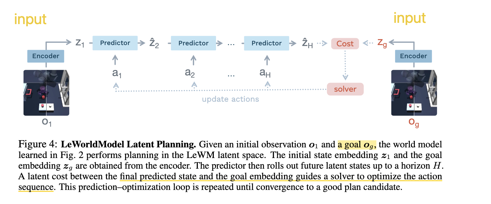
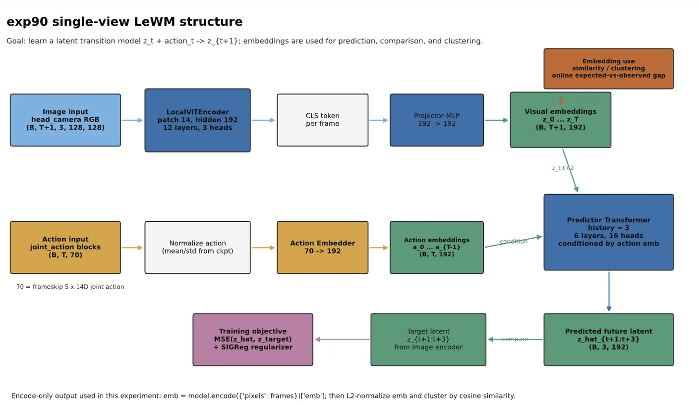
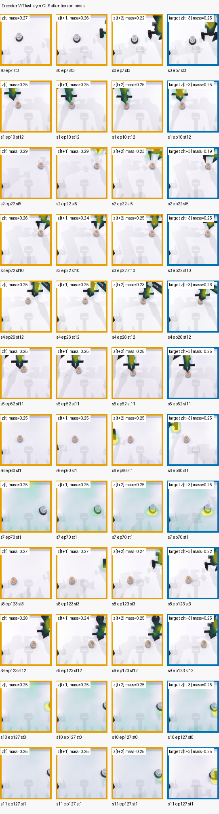
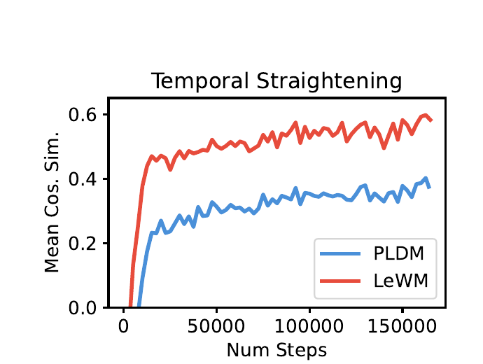
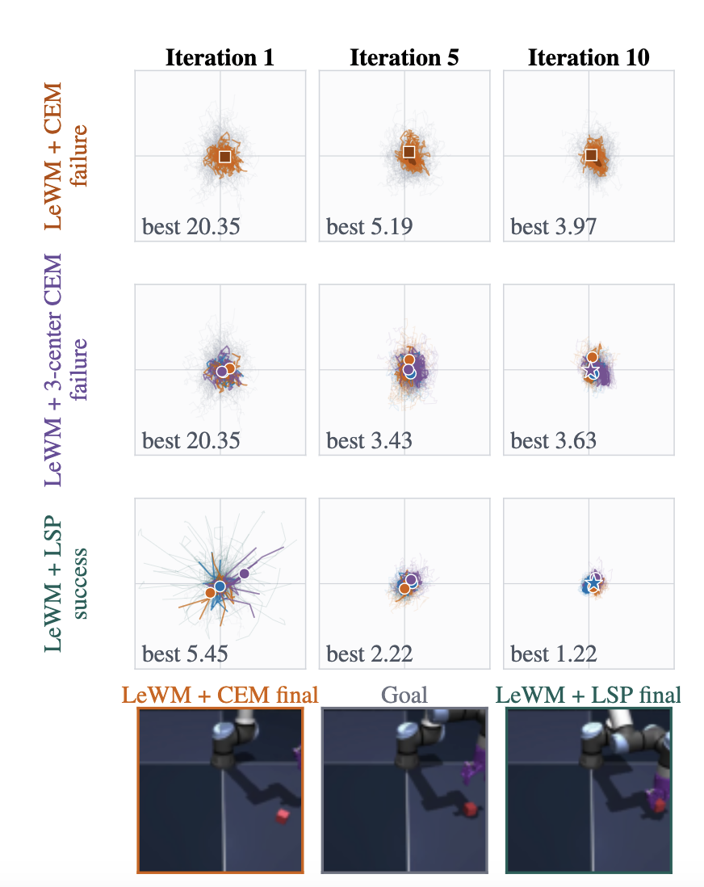
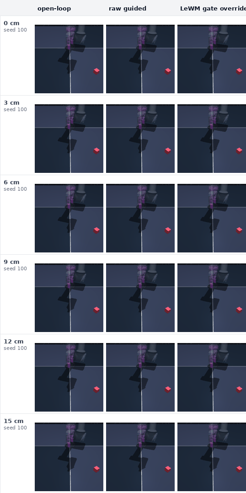
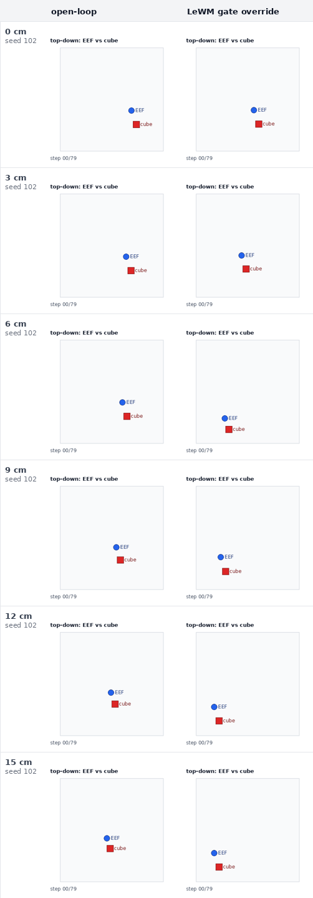
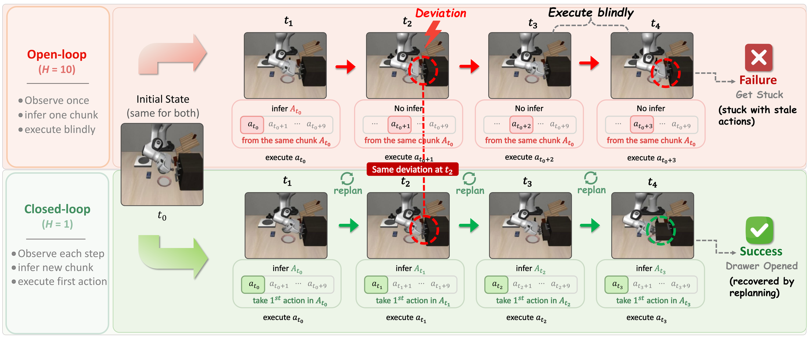
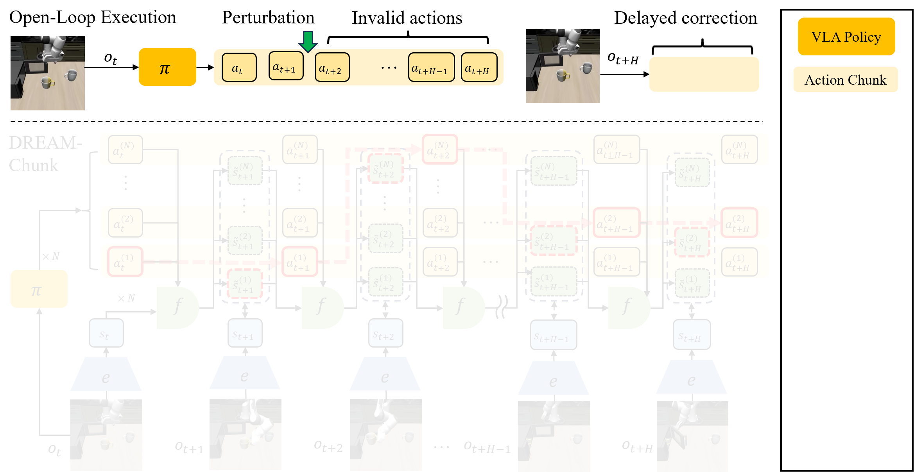

一句话概括
世界模型能够预测“动作之后会发生什么”，但未必理解这个变化是否让任务更接近目标。本文提出 Latent Sense of Progress（LSP）：先把预测 latent 组织成一个面向当前目标的进度坐标，再用这个进度改善动作搜索的初始候选。
最重要的设计边界：进度只负责告诉规划器“从哪里开始搜”，最终候选仍由原世界模型的 terminal cost 评分。
本文结构
一、基线：LeWM 如何用 CEM 规划

LeWM 是什么？ LeWM 是一个从图像学习的 latent world model。它先用同一个 encoder 把当前画面和目标画面压缩成 latent 表示，再根据一串候选动作，在 latent 空间里预测这些动作执行后会到达什么状态。预测终点越接近目标 latent，说明这串动作看起来越有希望。整个过程不需要先生成未来图像，只需在更紧凑的 latent 空间中预测和比较。
LeWM 的结构

Encoder 注意力可视化

LeWM 的核心训练目标只有两项：
ℒLeWM ≜ ℒpred + λ SIGReg(Z)
其中，ℒpred 让 predictor 学会预测后续 latent，SIGReg(Z) 约束 latent 的整体分布、避免表示坍塌，使 encoder 和 predictor 能够从图像端到端稳定训练。
CEM 规划是什么？ CEM 是一种通过反复采样来寻找动作的优化方法。它先从一个动作分布中随机生成许多候选动作序列，让 LeWM 分别预测其结果并计算终点 cost；随后保留 cost 最低的一小批候选，用它们更新动作分布，再进行下一轮采样。经过多轮迭代，候选动作会逐渐集中到更好的区域。不过，如果第一轮没有采到有用动作，CEM 很难找到正确方向；如果同时存在多种可行方案，单个分布也可能把它们平均掉。
二、问题：预测变化不等于理解进展
预测性世界模型的 latent 可以保留位置、接触和动作动力学等物理信息。规划时，模型 rollout 一组候选动作，再比较终点 latent 与目标 latent 的距离。
但同一个物理变化面对不同目标会有不同意义。机械臂把方块向右推：目标在右边时是前进，目标在左边时是倒退，目标只关心高度时则可能无关。单纯预测出“方块向右移动”并不能回答这三个判断。
什么是 latent straightness？
一段连续的视觉轨迹经过 encoder 后，会变成 latent 空间中的一串点：
z0 → z1 → z2 → z3 → …
Δzt = zt+1 − zt
其中，Δzt 是相邻时刻的 latent displacement，表示这一步动作在模型内部造成的状态变化。LeWM 报告了一个自然出现的现象：随着预测训练进行，相邻 displacement 会越来越同向。也就是说，latent 轨迹原本可能不断弯折，训练后则更接近沿一个稳定方向演化。
经过 encoder 后，每个画面分别对应 z0、z1、z2、z3。如果 latent 的时间结构还比较混乱，相邻状态可能在空间中不断改变方向：
训练早期：z0 → z1 ↗ z2 ↓ z3
虽然现实里方块始终向右移动，但 latent 中的轨迹比较弯折。随着 LeWM 的预测训练进行，相邻 displacement 逐渐对齐：
训练后期：z0 → z1 → z2 → z3

论文把这种连续变化方向逐渐对齐的现象称为 latent straightening。值得注意的是，LeWM 的训练目标里没有专门的 straightening loss；它是在学习预测后续状态的过程中自然出现的。因此，本文把 straightness 看作 predictive latent 已经具有一定“时间组织结构”的线索，而不是 LSP 要直接优化的最终目标。
三、LSP：从进度表示到进度引导搜索
LSP 的总逻辑是先让 latent“能够表达进度”，再让规划器“利用进度找到更好的搜索起点”。
LSP Shaping 利用轨迹的时间顺序构造距离目标，通过 direct、Bellman 和 imagined–observed consistency 损失调整共享 encoder 与 predictor，使当前 latent 到目标 latent 的余弦距离能够表示 goal-relative progress，而不需要奖励、阶段标签或独立的 progress head；随后 LSP Search 用离线数据学习进度与动作序列之间的条件分布 q(A | p)，规划时只查询一次当前进度，用它生成一部分更符合当前任务阶段的初始候选，再通过均衡多中心 CEM 保留和优化不同动作模式。Progress 只决定“从哪里开始搜”，候选动作最终仍由 LeWM 原有的 terminal latent cost 评分和选择。
3.1 LSP Shaping：给共享 latent 加上进度语义
对状态 latent z 和目标 latent g，作者直接用余弦距离定义目标相关的进度：
d(z, g) = ½(1 − cos(z, g))
p(z, g) = 1 − d(z, g)
p 高表示当前状态接近这个视觉目标。它不是与任务无关的“绝对完成百分比”，也不是单独训练出来的 progress head，而是直接从共享 predictive latent 中读取。
监督从哪里来？
训练数据只需要有时间顺序的轨迹。对每段序列，选择未来第 h 个 macro step 的观测作为目标，并按照剩余步数构造距离目标 yr = 1 − γr。越接近序列终点，目标距离应越小、进度应越大。
进度损失包含三部分：
- Direct matching：让观测轨迹和想象轨迹的目标距离匹配按时间构造的目标。
- Bellman consistency：约束相邻时刻的距离满足逐步递推关系，使局部变化获得方向。
- Imagined–observed consistency：让同一时刻的 imagined latent 与 observed latent 具有一致的目标距离。
Lprog = Ldirect + LB + 0.25Lcons
L = Lpred + 0.09LSIGReg + αeLprog, αe ≤ 0.002
进度项的权重很小。这样做的目的只是组织 latent，而不是让一个一维顺序覆盖姿态、接触等对预测仍然重要的信息。
这一部分应强调的三个点
- 不需要 reward、success 或 phase label。
- 目标和 horizon 用来构造训练损失，但不是 predictor 的输入 token。
- 没有单独的进度网络，梯度直接塑造共享 encoder 和 predictor。
3.2 LSP Search：进度只查询一次
世界模型微调结束后被冻结。作者把离线 action window 与对应的进度 p(E(o), E(og)) 配对，拟合一个 8 分量全协方差 GMM，得到条件动作分布 q(A | p)。
每次重规划的过程如下：
- 根据当前状态和目标计算一次进度 p(zt, zg)。
- 第一批 300 个候选中，一半来自原始零中心高斯，一半来自进度条件分布。
- 仍用原始 terminal cost 选出 30 个全局 elites。
- 把 elites 均衡拆成 3 个中心，每个中心独立运行局部 CEM。
- 选择局部 elite 平均 cost 最低的中心，返回该中心的 elite mean。
“均衡”很重要：每个中心获得相同数量的 elite，避免最密集的一簇占满所有位置。这样可以在固定候选数下保留多个动作模式。
进度与 cost 的职责没有混在一起
进度只影响第一批 proposal。它不参与 rollout 级重排，不作为在线 reward，也不替换世界模型的 evaluator。候选动作和最终中心始终由原来的 terminal latent cost 选择。
额外开支
LSP Search 与普通 CEM 使用相同的候选数量、迭代次数和 world-model rollout 预算。额外计算主要来自一次 progress 查询、条件 GMM 采样、elite 均衡划分以及 3 个局部 CEM 中心的参数更新；8 分量 GMM 的拟合是一次性的离线开支。
| 任务 | CEM | LSP Search | 额外开支 |
|---|---|---|---|
| Two-Room | 333.72 ms | 344.93 ms | 3.4% |
| Reacher | 334.97 ms | 343.18 ms | 2.5% |
| Push-T | 1002.23 ms | 1019.37 ms | 1.7% |
| Cube | 339.31 ms | 355.59 ms | 4.8% |
在保持相同 world-model evaluation 数量的情况下，LSP Search 的每次重规划时间仅增加 1.7%–4.8%。
四、实验结果
实验沿着“表示 → 初始 proposal → 闭环控制”的顺序验证，而不是只报告最终成功率。
闭环成功率是否提高？
| 任务 | LeWM + CEM | LeWM + LSP | 提升 |
|---|---|---|---|
| Two-Room | 80.7% | 94.0% | +13.3 pp |
| Reacher | 81.3% | 93.3% | +12.0 pp |
| Push-T | 82.0% | 86.7% | +4.7 pp |
| Cube | 70.0% | 84.7% | +14.7 pp |
Two-Room、Reacher 和 Cube 的 95% 置信区间不跨 0。Push-T 的区间为 [−2.0, 11.3]，因此该任务上的改善仍未确定。
改善是否来自正确的进度条件？
在尚未解决的 Cube pairs 上，第一次 CEM 更新前的 success coverage 为：
- 正确进度：74.7%
- 只使用动作的 mixture：60.9%
- 打乱进度：54.0%
- 零中心高斯：40.2%
这说明正确进度在优化开始前就把更多有用动作放进了第一批候选，是目前最有力的机制证据。

五、如何评价这篇工作
优点
- 把动力学预测与目标相关解释分开，问题定义清楚。
- progress 不替代 evaluator，方法接口比较克制。
- 从表示、proposal 到闭环结果构成了完整证据链。
- 任务内保持相同的候选 rollout 数，比较较为公平。
局限
- 目前只在 LeWM 和四个视觉控制任务上验证。
- 依赖固定 offset 的 action window 和已知的动作对称性。
- Push-T 上的收益没有达到统计显著。
- 虽然 rollout 数一致，规划时间仍增加 1.7–4.8%。
最后总结
预测 latent 可能具有良好的时间结构，但“轨迹很直”不等于“正在朝目标前进”。LSP 用有序轨迹把共享 latent 塑造成目标相关的进度坐标，再用它为动作搜索提供一次性的、阶段兼容的起点。最终评分仍由原世界模型负责。
实验最有力地支持的是：正确进度改善了第一批 proposal，并在三个任务上转化成显著的闭环收益。
One More Thing：这项工作是怎么走到这里的
- 五月启动：先吸取 RouteGuide 的教训。 上一个工作中，我们因为觉得隐式 latent 记忆机制很有意思，在 RxR 环境上花了很长时间搭建数据采集、训练和对齐流水线，也尝试了多种记忆模式的组合，但最终效果并不理想。因此，这一次希望先聚焦一个真正有价值的 benchmark，引入一个边界清楚的新方法，解决该 benchmark 上尚未解决的具体问题，而不是一开始就铺开复杂系统。
- 最初设想：用 latent 期望轨迹修正 open-loop action chunk。 最初选择的是动态 VLA 场景，希望在 DOMINO benchmark 上用 LeWM 为 action chunk 生成未来的 latent 期望轨迹，再在 chunk 的 open-loop 执行过程中，根据真实状态与期望轨迹的偏差进行在线纠正。
- Cube 上出现了正向信号。 在 Cube 的 DP 任务中，当动作执行到一半时人为移开物体，参考 RTC 中 velocity guidance 的思路，通过最小化初始预期与当前动作预期之间的差异，确实可以让后续动作向物体移动后的方向对齐。实验中，直接把两组 latent 一起输入 MLP、预测动作 residual，效果反而更好。

在执行过程中将 Cube 分别移动 0–15 cm。对比 open-loop、直接 guidance 与加入 LeWM gate override 后的动作响应。 
EEF 与 Cube 的俯视轨迹。随着扰动距离增大，LeWM gate override 会改变末端运动方向，使动作向移动后的物体位置重新对齐。 - 但在 DOMINO 的 π0.5 上无法稳定复现。 一个可能的问题是 latent 空间过于抽象。于是我们参考 World Value Model 的思路，进一步训练了一个进度预测器，并得到了性能不错的结构；这一能力也恰好契合当时公司的实际需求。但一维 progress 虽然能够判断任务走到了哪里，却仍然无法提供足够具体的动作修正方向。
- 进一步分析发现了更根本的限制。 LeWM 对细粒度动作差异不够敏感。在 π0.5 的支撑数据上训练后，它仍然无法稳定区分并选出更好的动作，因此仅靠 latent 对齐或一维进度都很难实现可靠的 action correction。
- 临近 AAAI 截稿：收缩问题并形成 LSP。 既然 progress 能力已经得到验证，而 LeWM 在原有视觉规划任务上具备可用的动作评价能力，我们不再强行让它解决尚不擅长的细粒度 VLA 修正，而是直接利用 goal-relative progress 改善 LeWM 本身的规划任务。最终形成两部分方法：用 LSP Shaping 把 progress 写入共享 latent，再用 LSP Search 将它用于动作搜索的初始化。
同期还出现了 VLA-Corrector 和 DREAM-Chunk 两项工作。它们与我们最初的出发点相似：都注意到 action chunk 在 open-loop 执行时无法及时响应环境变化，但选择了不同的解决方式。VLA-Corrector 监测预测视觉特征与真实视觉特征是否持续偏离，据此提前截断当前 chunk 并重新规划；DREAM-Chunk 则为多个候选 chunk 预测未来 latent，在执行过程中将当前观测与这些预期状态对齐，动态选择更匹配的动作。它们说明 open-loop chunk 的在线修正本身是一个有价值的问题，也反衬出我们最终为何把当前工作收缩到 LeWM 已经具备可靠评价能力的规划场景。
VLA-Corrector：检测执行偏差，触发截断与重新规划

DREAM-Chunk：预测候选 chunk 的未来状态，并在执行时进行匹配
